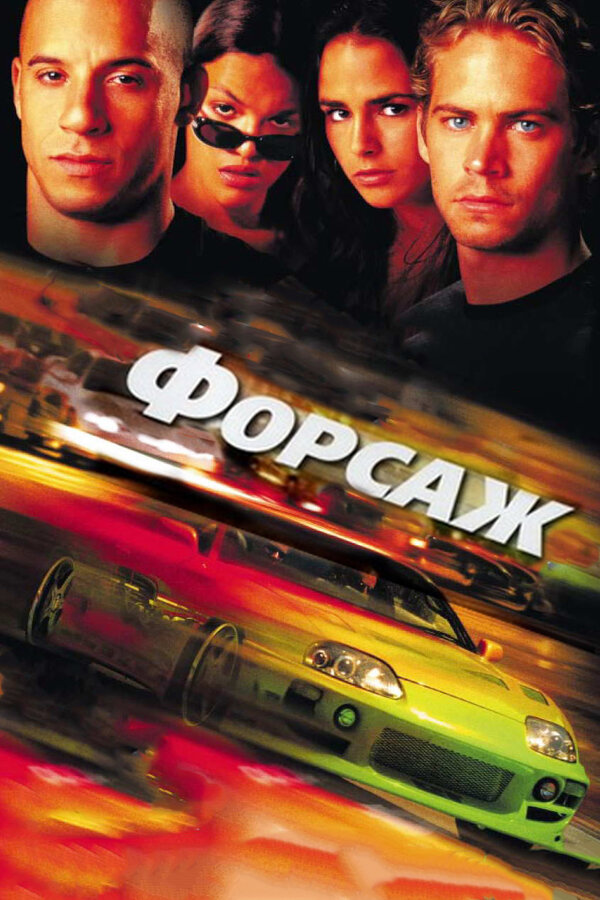

Фільми форсаж
«Форсаж» (англ. The Fast and the Furious; — «Швидкі та Люті») — американська Медіафраншиза, що складається на даний момент з восьми повнометражних і двох короткометражних фільмів, випущених з 2001 по 2019. Є найбільш прибутковою франшизою студії Universal — загальні збори всіх частин складають 2,3 млрд доларів[1][2].
